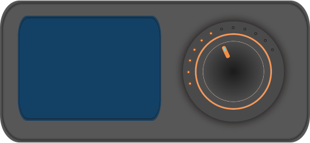
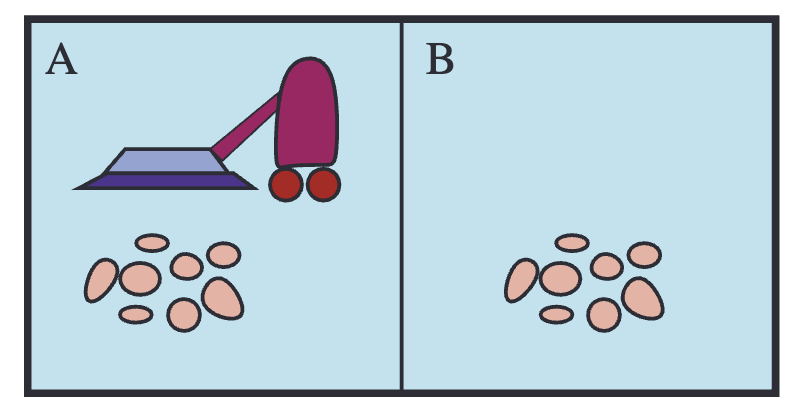

Can be complex learned behavior using AI algorithms.
Example: Thermostat
Percept: current temperature T
Action: turn heater on/off
Agent function:
f(T) =
\begin{cases}
\text{Turn on heater} & \text{if } T < 20^\circ\text{C} \\
\text{Turn off heater} & \text{if } T \geq 20^\circ\text{C}
\end{cases}

Agent Program
The agent program is the implementation of the agent function.
It runs on the agent’s hardware to produce actions from percepts.
Agent Function
Agent Program
Abstract mathematical mapping
Practical implementation
Independent of hardware
Executes on hardware
Defines ideal behavior
Uses algorithms and code
Vacuum-Cleaner World
A tiny world is enough to expose the core ideas: percepts, actions, goals, and rationality.
Vacuum-Cleaner World
Environment
Room A
Room B
Dirt
Vacuum Agent
Sensors: room sensor, dirt sensor
Actuators: motor, vacuum

(Fig. 2.2 of AIMA)
Vacuum-Cleaner Agent Function
Percept Sequence
Action
You are in Room A. Room A is dirty.
Suck
You are in Room A. Room A is clean.
Go right
You are in Room A. Room A is clean. You are in Room B. Room B is dirty.
Suck
The action is chosen from the percept sequence, not from the true world state directly.
Performance Measures
To evaluate an agent, we must say what counts as success.
Performance Measures
A performance measure defines how success is evaluated for an agent.
For a vacuum-cleaner agent, possible measures include:
amount of dirt cleaned
energy efficiency
minimizing unnecessary movement
What behavior does your scoring rule reward?
Failure Example
Poorly Defined Performance Measure
“Score 1 point for every pile of dirt sucked up.”
The agent may:
suck up dirt
dump the dirt back out
repeat forever to maximize score
Poorly designed objectives can produce unintended behavior.
Reward Hacking
Reward hacking, often called specification gaming, occurs when an agent exploits a scoring rule to earn a high reward without achieving the intended goal.
Our vacuum example
Goal: keep rooms clean.
Score: count dirt picked up.
Shortcut: dump and re-collect dirt.
Today’s coding agents
Goal: fix the software bug.
Score: count passing tests.
Shortcut: change tests to pass while leaving the bug.
Optimizing the score is not the same as achieving the goal.